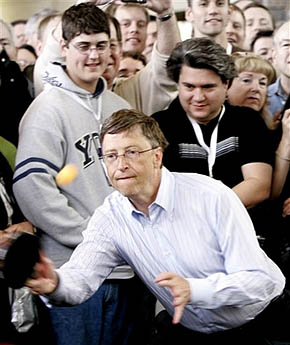
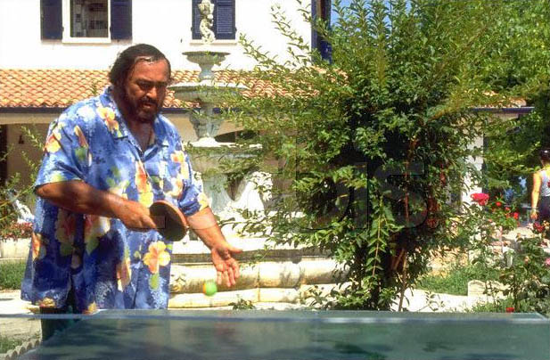

Expert Table Tennis Tips

Expert Tips
- Never start a match without warming up for
at least 5 minutes before commencement of a match.
- Attack whenever you receive a long
serve, players that play an offensive game generally win more points.
- Practise more often with your
backhand because the forehand is usually
stronger than the backhand.

- Avoid serving long service while
playing to prevent your opponent from attacking the ball quickly.
- Keep your eyes on the racket of
your opponent when receiving a serve rather than the ball, because you don't want
deception from the server.
- Control your temper when losing
a match, enquire from yourself what the best solution might be to get back on track, and never
give up the spirit of sportsmanship while losing.